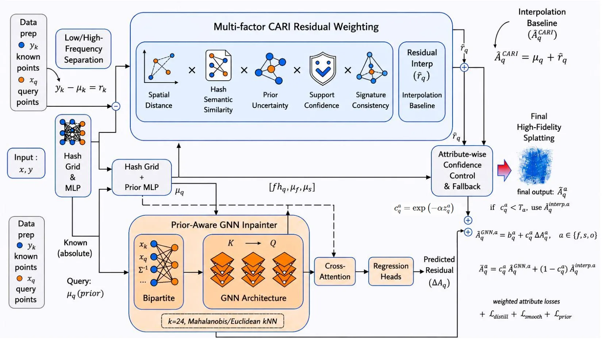
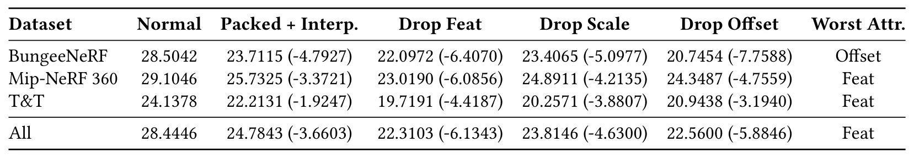

通过原子化封装与 GNN 误差隐藏实现丢包鲁棒的 3D Gaussian 压缩Packet-Loss Robust 3D Gaussian Compression via Atomic Packaging and GNN-based Error Concealment
直接解决 3DGS 网络传输的工程薄弱点，编码结构与解码补偿协同设计且给出 20% 丢包结果；仍需验证突发丢包、真实链路、时延和传统 FEC 基线。
一句话工作总结
将 anchor 属性原子化封装，再结合先验插值与轻量 GNN，降低 3DGS 流媒体在丢包下的渲染崩坏。
摘要
3D Gaussian Splatting 及 HAC++ 等压缩方案可实现高保真实时神经渲染，但码流在网络丢包时十分脆弱。本文提出丢包鲁棒的 3DGS 传输与误差隐藏框架：编码端把每个 anchor 的全部属性联合封装，使属性损坏转化为干净的 anchor 缺失，并用分层随机分组把丢包分散到空间；解码端以 Context-Aware Residual Interpolation 建立基线，再用带 hash-grid 先验交叉注意力的轻量两层 GNN 恢复高频属性残差，并按属性置信度回退到插值。20% 随机丢包实验中，相对无损 HAC++ 参考的平均 PSNR 损失约为 3 dB。
3D Gaussian Splatting (3DGS) and recent compression schemes such as HAC++ enable high-fidelity real-time neural rendering, but their bitstreams are fragile under packet loss during network streaming. Existing compression methods often separate correlated anchor attributes into independent streams, so losing one packet can create attribute-inconsistent broken anchors and severe rendering artifacts. We propose a packet-loss robust 3DGS transmission and error concealment framework. On the encoder side, anchor-level atomic packaging jointly encapsulates all attributes of each anchor, converting corrupted-attribute failures into clean missing-anchor erasures. Stratified random grouping further disperses packet losses across the spatial domain to avoid large contiguous voids. On the decoder side, we formulate recovery as prior-aware attribute inpainting. A Context-Aware Residual Interpolation (CARI) branch uses hash-grid prior predictions and neighboring residuals to build a robust baseline, while a lightweight two-layer graph neural network with cross-attention over hash-grid priors refines high-frequency attribute residuals. Attribute-wise confidence control falls back to interpolation when learned predictions are unreliable. Experiments under 20 percent random packet loss on BungeeNeRF, Mip-NeRF 360, and Tanks and Temples show that the proposed method substantially improves over no-concealment transmission and limits average PSNR degradation to about 3 dB relative to the lossless HAC++ reference.
中文解读摘录
- 链接：arXiv 2607.17916
- 核心贡献：把每个 anchor 的相关属性原子化封装，使损坏从“属性不一致”转化为干净的缺失 anchor；再用分层随机分组分散空间空洞，并以 CARI 插值、轻量 GNN 和 hash-grid 先验恢复属性。
- 为什么重要：将 3DGS 压缩从静态码率问题推进到不可靠网络传输；在 20% 随机丢包下，相对无损 HAC++ 参考的平均 PSNR 损失约控制在 3 dB。
- 待核查：真实突发丢包、端到端时延、FEC/重传基线、不同 MTU 与 anchor 排布，以及补偿网络的跨场景泛化。
图表/页面预览

{kind=link}

{kind=link}
